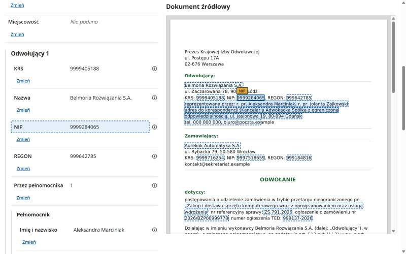
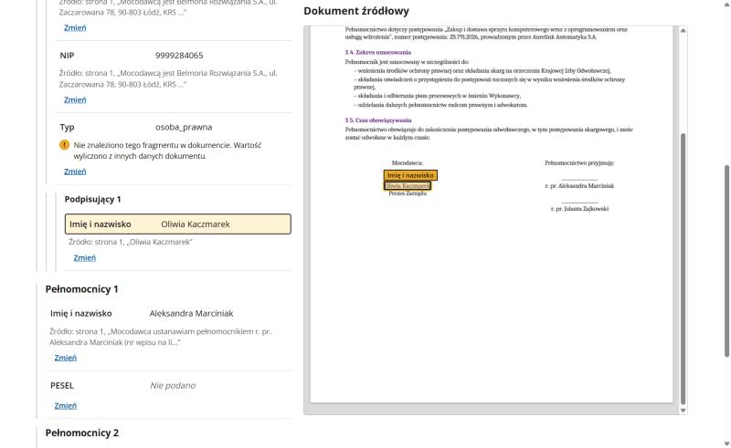

{ } jsonix
Dokumenty sprawy KIO → dane JSON
Rozpoznajemy odwołanie, pełnomocnictwo i potwierdzenie przelewu z treści dokumentu, wyodrębniamy dane zgodnie ze schematem UZP i pokazujemy, skąd pochodzi każda wartość.
HackNation 2026 · zadanie Urzędu Zamówień Publicznych „Odwołania2json”
Problem
- Do każdej sprawy odwoławczej spływa komplet PDF-ów: odwołanie, pełnomocnictwo, potwierdzenie przelewu i pisma, które nie są żadnym z nich.
- Dane (strony, NIP, KRS, numery postępowań, kwoty, daty, pełnomocnicy) przepisuje się ręcznie.
- Dokumenty mają różne układy, a część to skany bez warstwy tekstowej.
- Wynik musi być ściśle zgodny ze schematem: kolejność kluczy,
null, gdy dokument czegoś nie podaje, imiona w mianowniku. - Dokument spoza typów → plik
.jsonz{}. - Urzędnik musi móc sprawdzić wynik, a nie tylko mu uwierzyć.
Jak działa
Wczytanietekst z PDF, czyszczenie, OCR skanów (CPU, offline)
→
Klasyfikacjapunktacja cech z YAML, typ albo „nieznany”
→
Ekstrakcjapola i listy z YAML, normalizacja, walidacja
→
JSON + tracewynik wg schematu UZP i źródło każdej wartości
- Ten sam potok dla CLI (
start.bat), API, GUI i Dockera, więc wszędzie identyczne dane. - Wszystko, co zależy od typu dokumentu, jest w konfiguracji (
config/doctypes/*.yaml), a nie w kodzie. - Działa na laptopie i7 / 16 GB bez GPU i bez sieci.
Jakość: F1 wg reguł UZP
⟨F1 dev⟩zbiór roboczy
⟨F1 holdout⟩zbiór kontrolny (bez strojenia)
⟨F1 skany⟩dokumenty z OCR
- Klasyfikacja: ⟨100% dev/holdout⟩, dokumenty spoza typów rozpoznane ⟨12/12⟩.
- F1 liczone dokładnie wg reguł organizatora (
eval/score.py): długie teksty z progiem 80%, reszta dokładnie, listy po treści. - Bramka regresji w CI: każda zmiana, która obniża F1, jest zatrzymywana. Raport:
python scripts/quality_report.py.
Transparentność: każda wartość ma źródło
- Pole obok dokumentu: najechanie podświetla fragment, kliknięcie przewija do niego. Działa też w drugą stronę.
- „Dlaczego ten typ?”: zdania po polsku z cechami, które zdecydowały o typie.
- Trace w CLI: metoda i fragment tekstu dla każdego pola (
output/.trace/). - Brak źródła = jawny komunikat, a nie udawane podświetlenie.

Bez LLM, z wyboru
- Reguły z konfiguracji osiągają ⟨F1⟩ bez kosztów i bez wysyłania danych poza komputer.
- 20/20 pkt za rozmiar modelu (bez LLM = maksimum wg UZP).
- Brak ryzyka zmyślania wartości: gdy dokument czegoś nie podaje, wynik to
null.
- Warstwa LLM jest gotowa jako opcja (
config/llm.yaml): klient zgodny z OpenAI, temperatura 0, kasety odpowiedzi w testach. - Tylko model open source ≤ 8B od dostawcy z serwerami w UE i polityką prywatności (wymóg UZP).
Nowy typ dokumentu bez kodu
- Nowy typ =
config/doctypes/<typ>.yaml+ szablonconfig/schemas/<typ>.json. - Nowe pole = wpis w YAML: gdzie szukać, czym, jak znormalizować i sprawdzić.
- W Dockerze
config/jest montowany, więc nie trzeba przebudowywać obrazu. - ⟨Demo 4. typu dodanego samą konfiguracją (E10)⟩
id: pelnomocnictwo
title: Pełnomocnictwo
output_template: schemas/pelnomocnictwo.json
classify:
title: ["pelnomocnictwo"]
strong: ["pelnomocnictw", "udzielam", "mocodawc"]
negative: ["kwota przelewu", "zarzut nr"]
min_score: 5.0
fields:
mocodawca[].data.krs:
extract:
- label: [krs]
value: '(?<!\d)\d{10}(?!\d)'
normalize: [krs]
GUI dla urzędnika
- Wiele plików naraz, postęp „N z M”, błędy przy pliku.
- PDF obok danych, edycja z „Przywróć wartość z dokumentu”, pobranie JSON albo ZIP.
- Design System Gov.pl, pełna obsługa klawiaturą, wysoki kontrast, deklaracja dostępności.
- Działa offline: PDF.js i fonty są w repozytorium.

Gotowe do uruchomienia u jury
start.batsam przygotowuje środowisko (Python 3.13/3.14,.venv, zależności).docker compose up: healthcheck,.envopcjonalny.- Przypięte wersje zależności, więc nowe wydanie biblioteki niczego nie zepsuje.
- CI: testy, bramka F1 (dev i holdout), smoke na Windows i Linux,
docker build. - Smoke Docker: wynik w kontenerze = wynik CLI, także dla skanu z OCR.
- Czas na dokument na CPU: ⟨z raportu jakości⟩.
Zespół i rozwiązania zewnętrzne
Zgodnie z §4 regulaminu: komponenty open source użyte w rozwiązaniu (pełna lista z licencjami: docs/zgloszenie.md).
| Komponent | Do czego | Licencja |
|---|---|---|
| pypdfium2, pypdf, pdfplumber | tekst z PDF | BSD-3 / Apache-2.0, BSD-3, MIT |
| RapidOCR, onnxruntime, OpenCV | OCR skanów na CPU | Apache-2.0, MIT, Apache-2.0 |
| FastAPI, uvicorn | API i serwer | MIT, BSD-3 |
| PyYAML, pydantic, rapidfuzz | konfiguracja, dane, podobieństwo tekstu | MIT |
| PDF.js, Open Sans | podgląd PDF, font GUI | Apache-2.0, SIL OFL 1.1 |
⟨Skład zespołu⟩